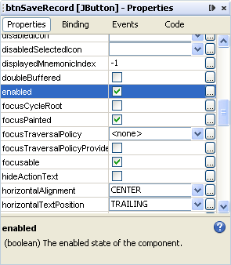
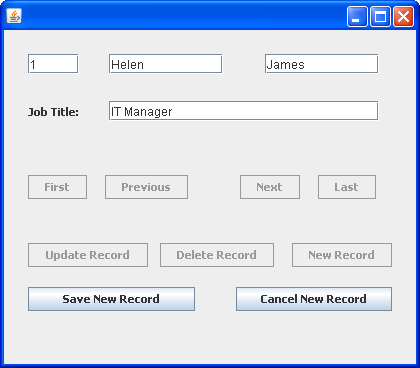
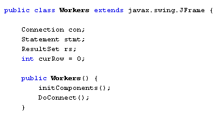
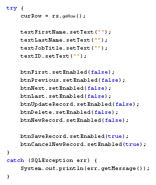
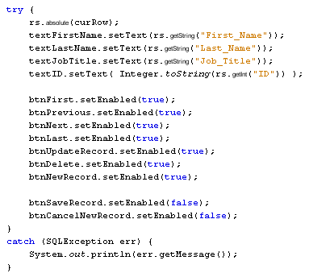
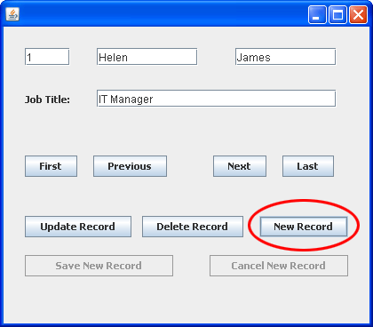
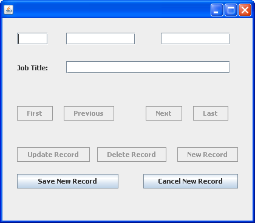

Learn Java- Complete Offline Beginners Guide
If that's all a little confusing, try the following. Click on your Save New Record button to select it. In the Properties area on the right, locate the Enabled property:

Uncheck the box to the right of enabled. The Save New Record will be disabled. Do the same for the Cancel New Record button. The Cancel New Record will be disabled. When your form loads, it will look like this:

Even if you had code for these two buttons, nothing would happen if you clicked on either of them.
When the New Record button is clicked, we can disable the following buttons:
First
Previous
Next
Last
Update Record
Delete Record
New Record
The Save and Cancel buttons, however, can be enabled. If the user clicks Cancel, we can switch the buttons back on again.
Double click your New Record button to create a code stub. Add the following lines of code:
btnFirst.setEnabled( false );
btnPrevious.setEnabled( false ) ;
btnNext.setEnabled( false );
btnLast.setEnabled( false );
btnUpdateRecord.setEnabled( false );
btnDelete.setEnabled( false );
btnNewRecord.setEnabled( false );
btnSaveRecord.setEnabled( true );
btnCancelNewRecord.setEnabled( true );
So seven of the buttons get turned off using the setEnabled property. Two of the buttons get turned on.
We can do the reverse for the Cancel button. Switch back to Design view. Double click your Cancel New Record button to create a code stub. Add the following:
btnFirst.setEnabled( true );
btnPrevious.setEnabled( true ) ;
btnNext.setEnabled( true );
btnLast.setEnabled( true );
btnUpdateRecord.setEnabled( true );
btnDelete.setEnabled( true );
btnNewRecord.setEnabled( true );
btnSaveRecord.setEnabled( false );
btnCancelNewRecord.setEnabled( false );
Now run your programme and test it out. Click the New Record button and the form will look like this:

Click the Cancel New Record button and the form will look like this:
Another thing we need to do is to record which row is currently loaded. In other words, which row number is currently loaded in the Text Fields. We need to do this because the Text Fields are going to be cleared. If the Cancel button is clicked, then we can reload the data that was erased.
Add the following Integer variable to the top of your code, just below your Connection, Statement, and ResultSet lines:
int curRow = 0;
The top of your code should look like this:

Now go back to your New Record code.
To get which row the Cursor is currently pointing to there is a method called getRow. This allows you to store the row number that the Cursor is currently on:
curRow = rs.getRow( );
We'll use this row number in the Cancel New Record code.
The only other thing we need to do for the New Record button is to clear the Text Fields. This is quite simple:
textFirstName.setText("");
textLastName.setText("");
textJobTitle.setText("");
textID.setText("");
So we're just setting the Text property to a blank string.
Because we've used a method of the ResultSet, we need to wrap everything up in a try … catch block. Here's what the code should look like for your New Record button:

For the Cancel button, we need to get the row that was previously loaded and put the data back in the Text Fields.
To move the Cursor back to the row it was previously pointing to, we can use the absolute method:
rs.absolute( curRow );
The absolute method moves the Cursor to a fixed position in the ResultSet. We want to move it the value that we stored in the variable curRow.
Now that Cursor is pointing at the correct row, we can load the data into the Text Fields:
textFirstName.setText( rs.getString("First_Name")
);
textLastName.setText( rs.getString("Last_Name") );
textJobTitle.setText( rs.getString("Job_Title") );
textID.setText( Integer.toString( rs.getInt("ID" )) );
Wrapping it all in a try … catch block gives us the following code:

When you've finished adding the code for the New and Cancel buttons, run your programme and try it out. Before clicking the New Record button, the form will look like this:

Click the New Record button to see the Text Fields cleared:

Clicking the Cancel button will reload the data:
Now that the New and Cancel buttons have been set up, we can go ahead and save any new data entered into the Text Fields.